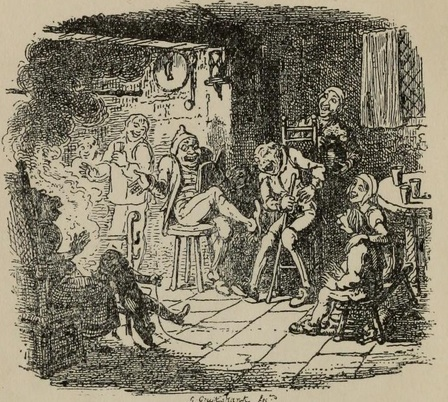

But it is the story of that terrible stupid catastrophe and some of its consequences.
This is just a very short test of why ratios seem to be incorrect, because I'm not sure.
In olden times when wishing still helped one, there lived a king whose daughters were all beautiful; and the youngest was so beautiful that the sun itself, which has seen so much, was astonished whenever it shone in her face. Close by the king's castle lay a great dark forest, and under an old lime-tree in the forest was a well, and when the day was very warm, the king's child went out into the forest and sat down by the side of the cool fountain, and when she was bored she took a golden ball, and threw it up on high and caught it; and this ball was her favorite plaything.
Far out in the uncharted backwaters of the unfashionable end of the western spiral arm of the Galaxy lies a small unregarded yellow sun.
Orbiting this at a distance of roughly ninety-two million miles is an utterly insignificant little blue green planet whose ape-descended life forms are so amazingly primitive that they still think digital watches are a pretty neat idea.
This planet has - or rather had - a problem, which was this: most of the people on it were unhappy for pretty much of the time. Many solutions were suggested for this problem, but most of these were largely concerned with the movements of small green pieces of paper, which is odd because on the whole it wasn't the small green pieces of paper that were unhappy.
And so the problem remained; lots of the people were mean, and most of them were miserable, even the ones with digital watches.
Many were increasingly of the opinion that they'd all made a big mistake in coming down from the trees in the first place. And some said that even the trees had been a bad move, and that no one should ever have left the oceans.
And then, one Thursday, nearly two thousand years after one man had been nailed to a tree for saying how great it would be to be nice to people for a change, one girl sitting on her own in a small cafe in Rickmansworth suddenly realized what it was that had been going wrong all this time, and she finally knew how the world could be made a good and happy place. This time it was right, it would work, and no one would have to get nailed to anything.
Sadly, however, before she could get to a phone to tell anyone about it, a terribly stupid catastrophe occurred, and the idea was lost forever.
This is not her story.
But it is the story of that terrible stupid catastrophe and some of its consequences.
It is also the story of a book, a book called The Hitch Hiker's Guide to the Galaxy - not an Earth book, never published on Earth, and until the terrible catastrophe occurred, never seen or heard of by any Earthman.
Nevertheless, a wholly remarkable book.
In fact it was probably the most remarkable book ever to come out of the great publishing houses of Ursa Minor - of which no Earthman had ever heard either.
Not only is it a wholly remarkable book, it is also a highly successful one - more popular than the Celestial Home Care Omnibus, better selling than Fifty More Things to do in Zero Gravity, and more controversial than Oolon Colluphid's trilogy of philosophical blockbusters Where God Went Wrong, Some More of God's Greatest Mistakes and Who is this God Person Anyway?
In many of the more relaxed civilizations on the Outer Eastern Rim of the Galaxy, the Hitch Hiker's Guide has already supplanted the great Encyclopedia Galactica as the standard repository of all knowledge and wisdom, for though it has many omissions and contains much that is apocryphal, or at least wildly inaccurate, it scores over the older, more pedestrian work in two important respects.
First, it is slightly cheaper; and secondly it has the words DON'T PANIC inscribed in large friendly letters on its cover.
But the story of this terrible, stupid Thursday, the story of its extraordinary consequences, and the story of how these consequences are inextricably intertwined with this remarkable book begins very simply.
It begins with a house.